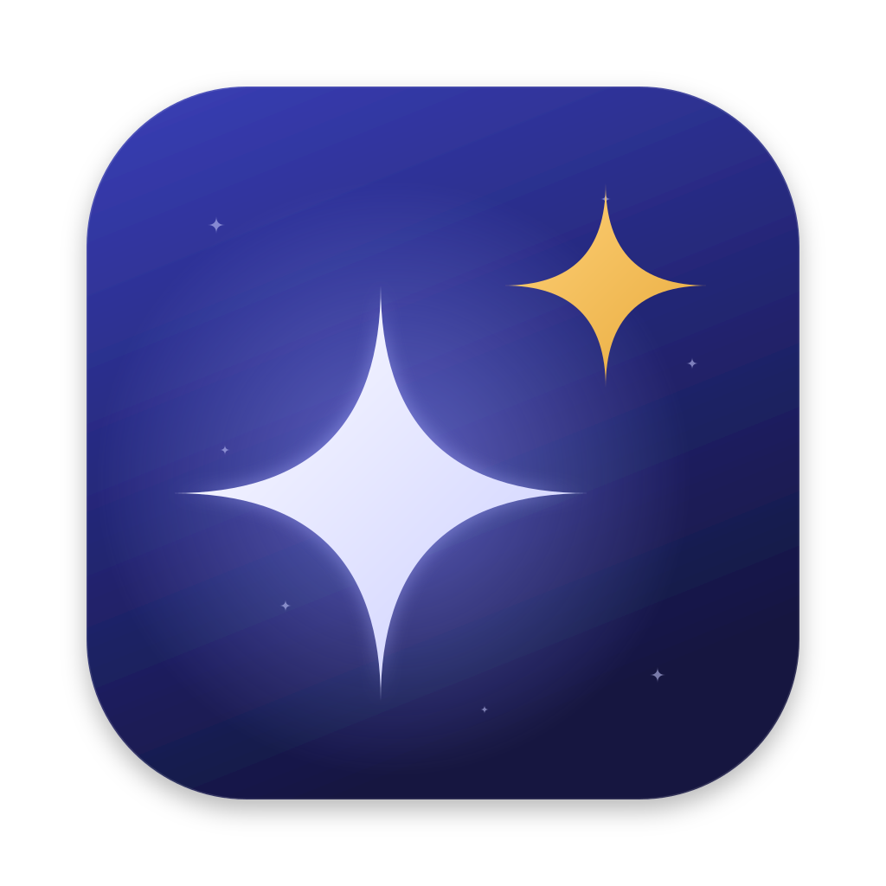

1枚の絵から、自動で動く
切り抜き、顔の位置、パーツ分けまで自動。崩れたら目印を手で直せます。

Castor自分のイラストを、デスクトップで暮らす小さな相棒に。
絵を1枚入れるだけ。呼吸して、目で追って、話しかけると答えます。
切り抜き、顔の位置、パーツ分けまで自動。崩れたら目印を手で直せます。
まばたき、呼吸、視線、口の動き。作業中は ⌥ で透けて下のボタンも押せます。
手元の AI（LM Studio / Ollama）だけでも会話できます。
最新版を確認しています…
macOS 26.5 以降・Apple シリコン（M1 以降）
Mac 版をダウンロードWindows 10 / 11（64 ビット）
Windows 版をダウンロードWindows 版は公開プレビューです。
Castor はパソコン用のアプリです。Mac か Windows のパソコンで開いてください。
ふつうは上のボタンだけで足ります。GitHub の Release ページには、用途ごとに次のファイルが並んでいます。
| ファイル | 用途 |
|---|
Castor は、ふたご座の明るい星の名前です。GitHub で ★ を押してもらえると、それがそのまま次の機能をつくる力になります。
★ GitHub で Star する正面向きで、顔がはっきりした絵が一番きれいに動きます。崩れたときは、顔の目印を手で直せます。
かかりません。外部の AI サービスを選んだ場合だけ、そのサービスの料金がかかります。
自分で描いた絵か、使ってよい絵でお願いします。